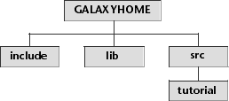

Chapter 2. Getting Started |
This chapter shows how to compile and link Galaxy programs. The sample program we will use is the simplest possible Galaxy program. It does not do anything but it will allow us to get comfortable with the externals of Galaxy before delving into its internals.
Before using Galaxy, it is necessary to set an environment variable called GALAXYHOME. This variable is used in two ways: during compiling and linking as a shorthand for locating Galaxy's header and library files, and by Galaxy applications to locate their resource files.
The GALAXYHOME variable should be set to the full pathname of the directory where Galaxy is installed. If you don't have a GALAXYHOME variable already and you don't know where Galaxy is installed, check with your system administrator.
Figure 1. GALAXYHOME directory structure

The program we are going to compile follows:
A message is displayed similar to the following:
This message is a warning produced by Galaxy that indicates a potential problem. In this case it's the expected behavior (this is explained in more detail when application resources are introduced).
As with all other C programs, this one begins with a list of header files to include. There are two sections here: one for ANSI headers and one for Galaxy headers. Galaxy supplies its own version of ANSI header files. One of the major hurdles for portability is incompatibilities in header files. Galaxy solves this by supplying an include file that uses your system's include file as a starting point and adds any missing pieces that are needed. In general if you need to use a standard include file like stdio.h or errno.h, you should use the Galaxy supplied replacement. The replacement will always start with the letter `v' so the files would be vstdio.h and verrno.h.
The vstartup.h header is specific to Galaxy and contains the prototype for the vstartup function.
The vstartup routine initializes Galaxy and makes it ready for use. All Galaxy programs begin with a call to vstartup and should pass the arguments argc and argv that were themselves the arguments to your main function.
All programs should end with the exit routine. Do not return from main either explicitly by a return statement or implicitly by falling off the end. Galaxy makes use of exit hooks provided by exit and may not shut your application down cleanly if exit isn't called.
The return statement at the end is never reached under normal circumstances because exit never returns. However, according to ANSI specifications, main returns an int and thus must return something. Providing a return statement prevents compile time warnings.
Getting Ready
Make a copy of the files in the tutorial subdirectory. We'll use these copies as the basis for the rest of this tutorial. Compiling
Now we are ready to compile the first program. This tutorial assumes you are using the Gnu C compiler (gcc), but any ANSI C compiler will do. /*
* tut2a.c
*
* This is the simplest possible Galaxy program.
*
* It doesn't really do anything, but it allows you to test
* compiling and linking Galaxy applications.
*
*/
(1) /* ANSI headers */
#include <vstdlib.h> /* for exit(), EXIT_ codes */
/* Galaxy headers */
#include <vstartup.h>
int main (int argc, char **argv)
{
(2) vstartup (argc, argv); /* Initialize Galaxy */
(3) exit (EXIT_SUCCESS);
(4) return EXIT_FAILURE;
}
Compile and run the program according to the instructions provided in the Galaxy Application Environment Installation Guide and Platform-specific Notes.vapplication: unable to find resource file (tut2a.vr)
Looking at the Program
Now let's look at the tut2a program and see what it does. It's really not much. It consists of three executable statements of which only two will run. Basically, the program initializes Galaxy and then exits.(1) /* ANSI headers */
#include <vstdlib.h> /* for exit(), EXIT_ codes */
/* Galaxy headers */
#include <vstartup.h>
(2) vstartup (argc, argv); /* Initialize Galaxy */
(3) exit (EXIT_SUCCESS);
(4) return EXIT_FAILURE;
|
|
Previous Chapter | Next Chapter Tutorial Contents Switch to Another Document |
Need help? Contact Visix. Copyright 1996-97, Visix Software Inc. |